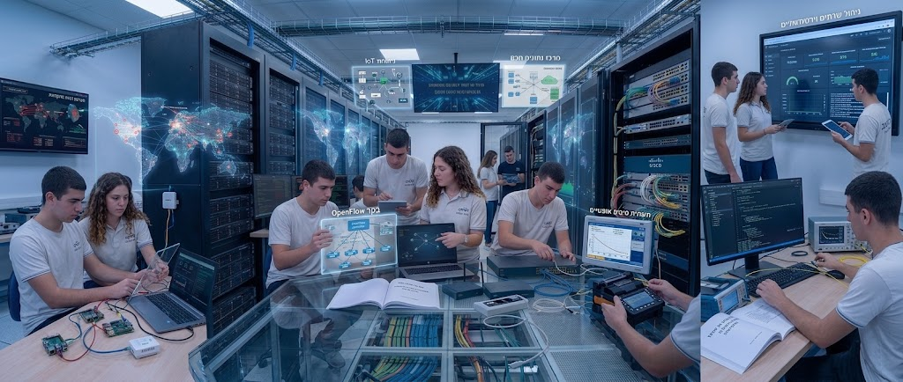
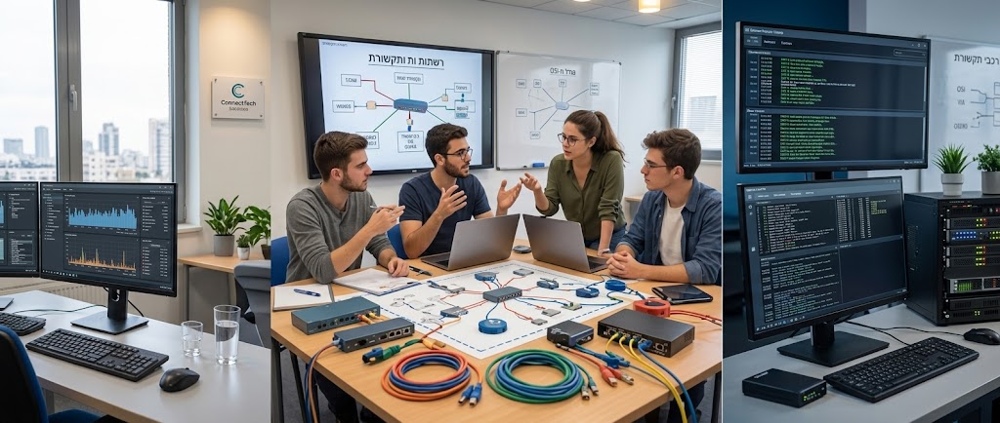
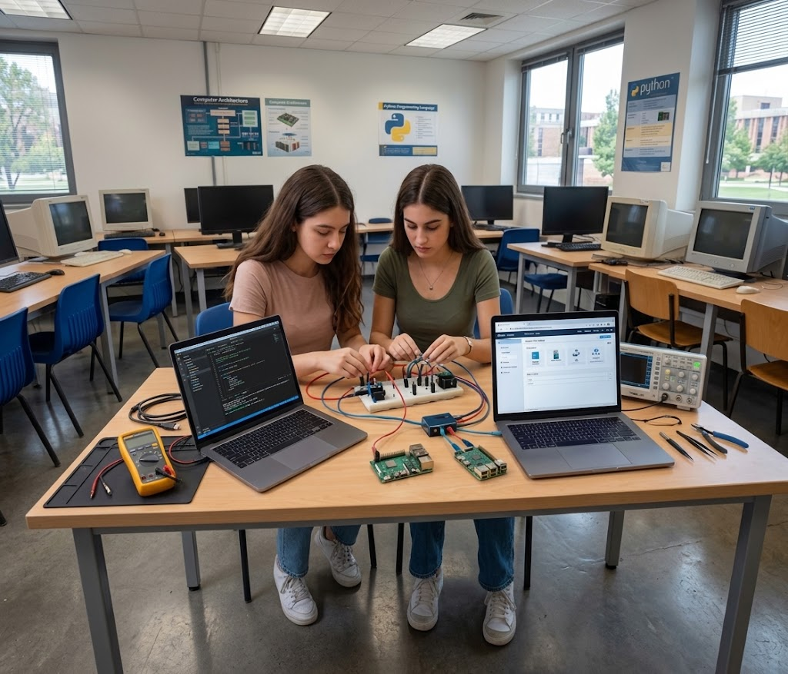
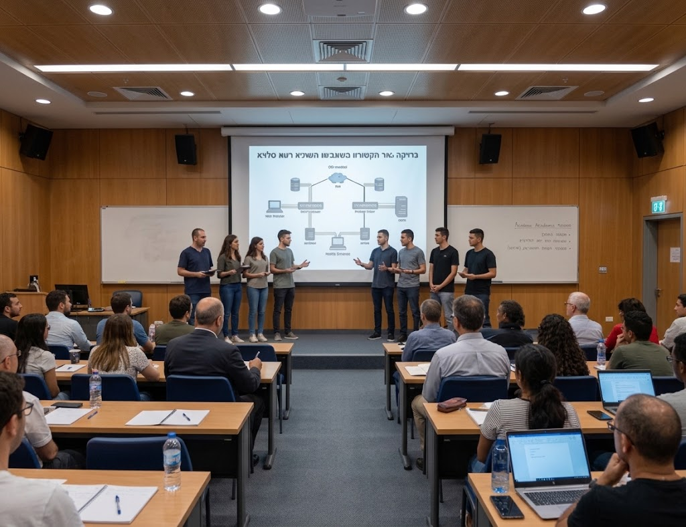

לא עוד יחידת לימוד — כאן בונים את הפרויקט עצמו. שמונה מודולים שמלווים אתכם צעד-צעד על פני 75 הסעיפים של טופס הבדיקה הרשמי, מהדף הראשון של המסמך ועד הביבליוגרפיה, עם מנחה אישי מבוסס AI, מצגת וסרטון הסבר לכל מודול.



